Poznámka překladatele: Tento interaktivní článek je z května 2020 a občas odkazuje na americké reálie, nicméně veškerý obsah i závěry jsou platné i pro Českou republiku dnes. Epidemie se chovají všude stejně. Matematika funguje i v ČR. (Filip Hráček, říjen 2020)
· · ·
"Bát se člověk má jen strachu samotného." To je pitomá rada.
Jasně, nehromaďte toaletní papír, ale pokud se zákonodárci bojí strachu samotného, budou nebezpečí podceňovat jen proto, aby se vyvarovalo vzniku "masové paniky". Strach samotný není problém, problém je jakým způsobem směřujeme náš strach. Strach nám dává energii čelit současným nebezpečím, ale také se připravit na ta budoucí.
Upřímně: my (Marcel, epidemiolog a Nicky, grafika/kód) jsme znepokojení. Vsadíme se, že Vy také! Proto jsme nasměřovali náš strach k vytvoření těchto hratelných simulací, ať také Vy můžete nasměrovat svůj strach směrem k porozumění:
- Posledních pár měsíců (základy epidemiologie, SEIR model, R & R0)
- Následujících pár měsíců (lockdowny, trasování kontaktů, masky)
- Následujících pár let (ztráta imunity? žádná vakcína?)
Tento průvodce (publikovaný 1. května 2020. klikněte na tuto poznámku pod čarou!→1) Vám má dodat naději a strach. Aby bylo možné porazit COVID-19 způsobem, který zároveň chrání naše psychické & finanční zdraví, je zapotřebí optimismu pro vytvoření plánů a pesimismu pro vytvoření záložních plánů. Jak kdysi řekla Gladys Bronwyn Stern, “Optimisté vynalezli letadlo, pesimisté padák.”
Teď se raději připoutejte: čekají nás pořádné turbulence.

Piloti využívají leteckých simulátorů, aby se naučili vyvarovat letecké havárii.
Epidemiologové využívají epidemiologických simulátorů, aby se naučili vyvarovat havárii lidstva.
Vytvořme tedy velmi, velmi jednoduchý "letecký simulátor epidemie"! V této simulaci mohou
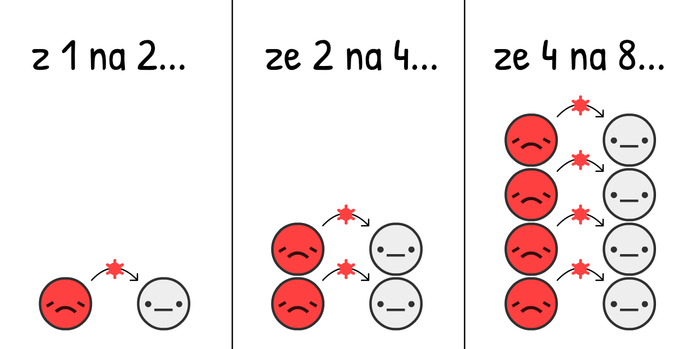
Předpokládá se, že na začátku šíření onemocnění COVID-19 přeskočí virus z
Pokud budeme simulovat "dvojnásobek každé 4 dny" a nic jiného na populaci začínající na hodnotě pouhých 0.001 %
Klikněte na "Start" pro odehrání simulace! Později si ji můžete zahrát znovu s jiným nastavením: (technická poznámka: 3)
Toto je křivka exponenciálního růstu. Pomalý začátek a posléze exploze. Začínáme s "Ale vždyť je to jen chřipka." a končíme u "No jasně, chřipky vlastně nevytváří masové hroby v bohatých metropolích". (autoři naráží na záběry masových hrobů blízko New Yorku z dubna — poznámka překladatele)
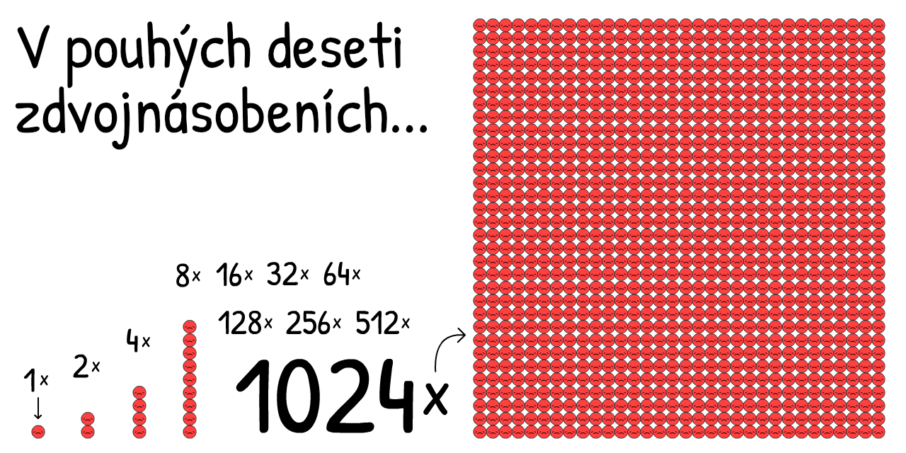
Tato simulace je ale špatná. Exponenciální růst, naštěstí, nemůže pokračovat donekonečna. Jedním z aspektů, který zastavuje šíření viru, je situace, ve které jsou ostatní již virem nakažení:
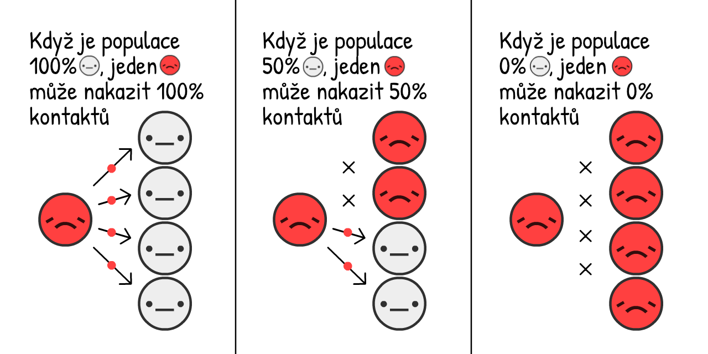
Čím více je
Jak to mění růst epidemie? Podívejme se na to:
Toto je "S-tvar" křivky logistického růstu. Začíná pomalu, exploduje a poté se opět zpomalí.
I přesto je tato simulace stále nesprávná. Chybí nám jeden faktor. A to, že
Pro zjednodušení budeme předstírat, že všichni
Průměrná doba, kdy jste s onemocněním COVID-19
Toto je opak exponenciálního růstu, tzv. křivka exponenciálního poklesu.
Co se stane, pokud budeme simulovat S-tvar logistického růstu a zároveň zotavení?

Podívejme se na to!
Červená křivka jsou současné případy
Šedá křivka jsou celkové případy (současné + zotavené
A odtud pochází ona slavná křivka! Nejedná se o Gaussovu křivku, není to dokonce ani "logaritmicko-normální" křivka. Nemá žádné pojmenování. I přesto se objevuje nespočetkrát a všichni doufají v její zploštění.
Toto je SIR Model,5
(
druhý-nejdůležitější pojem v základech epidemiologie:
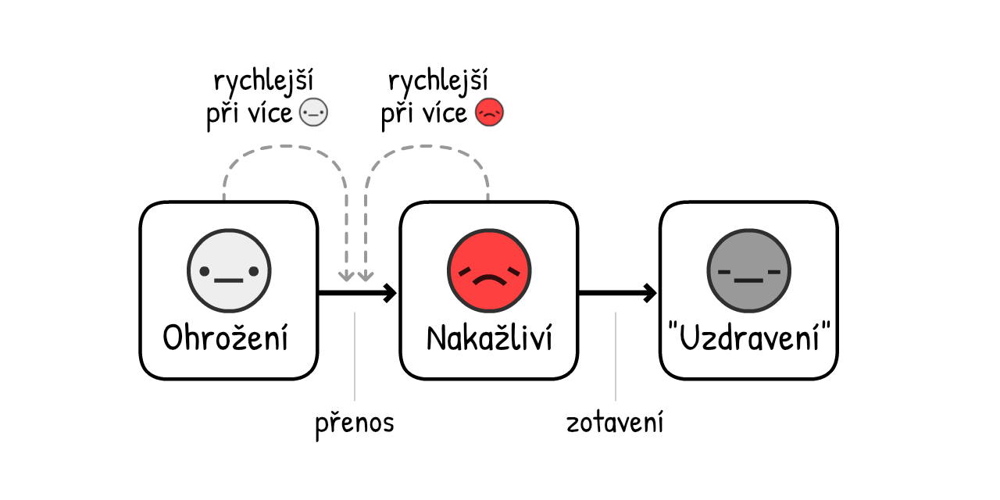
POZNÁMKA: Simulace, které slouží jako podklady pro politiky jsou výrazně, výrazně sofistikovanější než tyto! Nicméně SIR Model může i přesto vysvětlit některé všeobecné poznatky, i na úkor chybějících nuancí.
Vlastně, přidejme ještě jednu nuanci: předtím, než se z
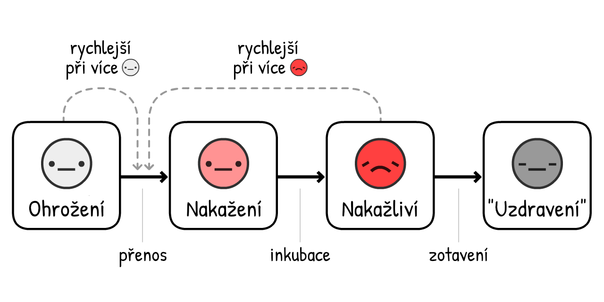
(Tato varianta se nazývá SEIR Model6, ve kterém "E" představuje
U onemocnění COVID-19 se předpokládá, že v průměru jste
Červená + Růžová křivka představuje současné případy (nakažlivé
Šedá křivka představuje celkové případy (současné + uzdravené
Moc se nezmění! Délka období mezi
Proč tomu tak je? Důvodem je první-nejdůležitější pojem v základech epidemiologie:

Zkratka pro "Reprodukční číslo". Jedná se o průměrné číslo lidí, které jeden
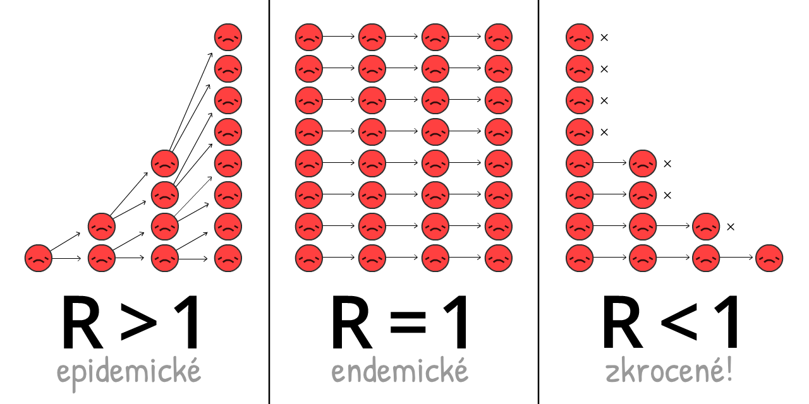
R se během epidemie mění, tak jak lidé získávají imunitu a jak se zavádějí různá opatření.
R0 (čte se R-nula) je hodnota R na počátku šíření, před získáním imunity, a před jakýmikoliv opatřeními. R0 se více zaměřuje na sílu viru jako takového, ale stále se může čas od času měnit. Například, R0 je vyšší ve městech s vyšší hustotou obydlení než v méně obydlených oblastech.
(Většina zpravodajských článků – a dokonce i některé vědecké práce! – zaměňují R a R0. Ještě jednou, vědecká terminologie je oříšek.)
R0 pro sezónní chřipku má hodnotu 1.288. To znamená, že na začátku šíření chřipky každý
R0 pro COVID-19 je předpokládán na hodnotě kolem 2.2,9 ačkoliv jedna ještě nedokončená studie říká, že se ve Wuhanu jednalo o hodnotu 5.7(!).10
V našich simulacích – na začátku a průměrně – jeden
Pohrajte si s touto R0 kalkulačkou a podívejte se, jakým způsobem je R0 závislé na době zotavení a periodě nové infekce:
Ale pomněte: čím méně je
Když má dostatek lidí imunitu, pak R < 1, a virus je potlačen! Tomu se říká stádní imunita. U chřipky je stádní imunity dosaženo očkováním. Pokoušet se o dosažení "přirozené stádní imunity" vystavením lidí infekci je příšerný nápad. (Avšak ne z důvodů, které si nejspíš myslíte! K tomu se dostaneme později.)
Zkusme si nyní opět přehrát SEIR Model, nyní zobrazující R0, R napříč časem, a hranici stádní imunity:
VŠIMNĚTE SI: Celkové případy se nezastaví na hranici stádní imunity, ale přestřelí ji! A překračují tu hranici přesně v momentu nejvyššího počtu případů. (To platí bez ohledu na změnu nastavení – vyzkoušejte si to sami!)
Pokud existuje více ne-
Pokud si z tohoto průvodce máte odnést pouze jedno ponaučení, je to následující – jedná se o velmi komplexní diagram, a tak si na jeho prostudování a vstřebání prosím dejte čas:
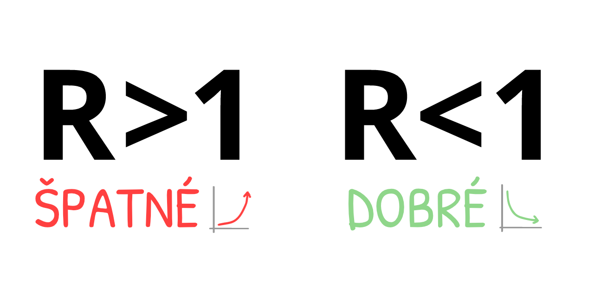
To znamená: NEPOTŘEBUJEME zachytit všechny přenosy (ani téměř všechny) k tomu, abychom zastavili COVID-19!
Je to paradox. COVID-19 je extrémně nakažlivý. I přesto k jeho zastavení potřebujeme zastavit "pouze" něco přes 60 % infekcí. 60 %?! Pokud by to byla školní známka, bylo by to 4-. Ale pokud máme R0 = 2.5, a snížíme jej o 61 %, dává nám to hodnotu R = 0.975, což splňuje R < 1. Virus je pod kontrolou! (přesný vzorec:12)
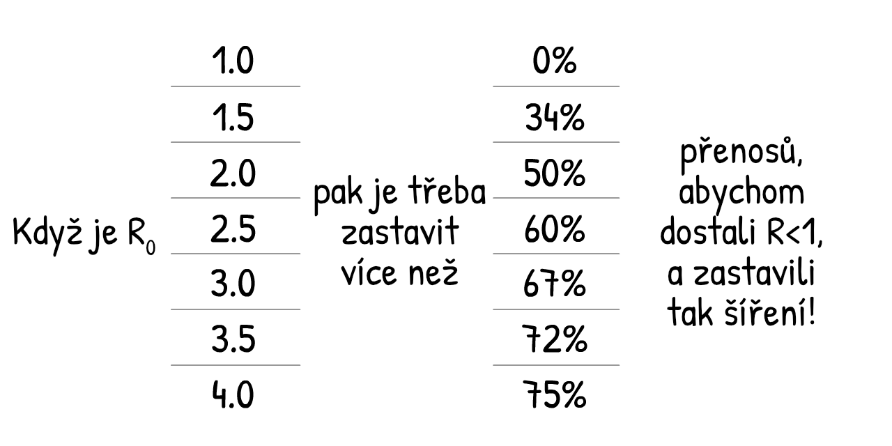
(Pokud si myslíte, že R0 nebo další čísla v naší simulaci jsou příliš nízká/vysoká, to je dobře. Znamená to, že kriticky uvažujete nad našimi předpoklady! Na konci tohoto průvodce najdete "Sandbox Mode", kam můžete zadat svá vlastní čísla a simulovat postup.)
Každé COVID-19 opatření, které znáte – mytí rukou, rozestupy, lockdowny, vlastní izolace, trasování kontaktů & karanténa, masky na obličej, dokonce i "stádní imunita" – všechna dělají jedno:
Dostávají R pod 1.
Takže nyní je na čase použít náš "letecký simulátor epidemie" a přijít tomu na kloub: Jak můžeme získat R < 1 způsobem, který chrání naše tělesné a také finanční zdraví?
Připravte se na nouzové přistání...
...mohlo to být horší. Zde je paralelní realita, která se nestala skutečností:
Scénář 0: Nicnedělání
Zhruba 1 z 20 lidí infikovaných onemocněním COVID-19 vyžaduje lůžko na JIP (jednotce intenzivní péče).13 V bohatých zemích, jako je USA, je k dispozici jedno JIP lůžko na 3400 lidí.14 To znamená, že USA dokáží zvládnout 20 z 3400 lidí nakažených zároveň. Jinými slovy, 0.6 % populace.
I v případě, že kapacitu zvýšíme více jak třikrát na 2 %, stane se následující - pokud bychom absolutně nic neučinili:
To není dobré.
Z tohoto důvodu se ve zprávě Imperial College z 16. března psalo, že pokud nic neuděláme, dojdou nám JIP lůžka, a více jak 80 % populace bude vystaveno infekci. (pamatujte: celkové případy přestřelují stádní imunitu)
I když pouhých 0.5 % infikovaných umírá15 – a to je štědré číslo, pokud zohledníme, že nejsou JIP lůžka – v zemi tak velké, jako je USA, s 300 miliony obyvatel, 0.5 % z 80 % pro 300 milionů = to je stále 1.2 milionů mrtvých... POKUD by nebyly podniknuty žádné kroky.
(Ve spoustě médií a na sociálních sítích se psalo "80 % se nakazí", ale už ne o tom "NICNEDĚLÁNÍ". Do titulků byl zaveden strach bez porozumění. Ach jo.)
Scénář 1: Zploštění křivky / Stádní imunita
Plán na "zploštění křivky" byl vychvalován každou veřejnou zdravotnickou organizací, zatímco ve Velké Británii byl záměr "stádní imunity" vypískán. Jedná se o ty samé plány. VB zkrátka ten svůj nedokázala dobře sdělit.16
Nicméně, oba plány obsahují doslova fatální chybu.
Za prvé, podívejme se na dva hlavní způsoby, jak "zploštit křivku": mytí rukou & rozestupy.
Zvýšené mytí rukou snižuje chřipku & nachlazení v zemích s vysokými příjmy o ~25 %17, zatímco lockdown celého města v Londýně omezil kontakty o ~70 %18. Řekněme, že mytí rukou dokáže snížit R až o 25 % a rozestupy dokáží snížit R až o 70 %:
Pohrejte si s tímto kalkulátorem a zjistěte jak poměr ne-
Zkusme nyní simulovat, jak by se vyvíjela epidemie COVID-19 pokud, počínaje březnem 2020, by bylo zvýšeno mytí rukou, a zavedeny pouze lehké rozestupy – tak, aby bylo R nižší, ale stále nad číslem 1:
Tři poznámky:
Tento přístup snižuje celkové případy! I když se nedostanete na R < 1, snížení R stále zachraňuje životy, a to díky tomu, že snížíme 'přestřelení' nad hranici stádní imunity. Celá řada lidí si myslí, že "Zploštění křivky" rozšiřuje případy bez snížení celku. Toto není možné v žádném modelu základní epidemiologie. Protože však zprávy podávají informace o tom, že "80 % se nakazí" jako jasnou věc, lidé docházejí k závěru, že tento celkový počet případů se nemůže změnit. Ach jo.
Z důvodů extra opatření dosahují současné případy vrcholu před dosažením stádní imunity. V této simulaci celkový počet případů přestřelí stádní imunitu pouze zlehka – to byl plán Velké Británie! V tomto případě je R < 1. Můžeme vypustit ostatní opatření a COVID-19 může být pod kontrolou! No, až na jeden problém...
Stále je nedostatek JIP lůžek. A to na několik měsíců. (nezapomenínejte na to, že hodnota pro JIP již byla pro potřeby této simulace ztrojnásobena)
To patří k dalším zjištěním ze zprávy Imperial College z 16. března, která přesvědčila VB opustit svůj původní plán. Jakýkoliv pokus o zmírnění (snížení R, ale R > 1) selže. Jedinou cestou ven je potlačení (snížit R tak, aby nastalo R < 1).
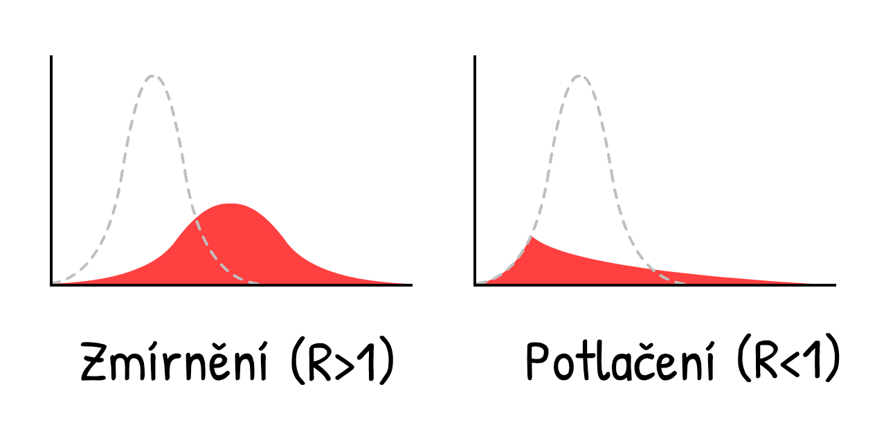
Toto není pouhé zploštění křivky, toto je její rozbití. Například využitím...
Scénář 2: Několikaměsíční lockdown
Podívejme se, co se stane, pokud rozbijeme křivku pětiměsíčním lockdownem, snížením
Aha.
Toto je ona "druhá vlna", o které všichni mluví. Jakmile stáhneme lockdown, opět se dostaneme na R > 1. Jeden jediný zbývající
Lockdown není lék, jedná se pouze o restart.
Takže co, budeme dělat lockdown znovu a znovu?
Scénář 3: Přerušovaný lockdown
Toto řešení jako první navrhla zpráva Imperial College z 16. března, a později také zpráva z Harvardu.20
Zde je simulace: (Po odehrání "nahraného scénáře", můžete vyzkoušet simulaci svého vlastního lockdown plánu změnou posuvníků během simulace! Simulaci můžete pozastavit & pokračovat nebo změnit její rychlost.)
Toto by udrželo případy pod kapacitou JIP! A jedná se o mnohem lepší řešení než jakým je 18-měsíční souvislý lockdown do doby, než bude dostupná vakcína. Jednoduše musíme... vše na pár měsíců zavřít a na pár měsíců otevřít, a takto postupovat dokud nebude dostupná vakcína. (Pokud není vakcína dostupná je nutné opakovat do doby dosažení kolektivní imunity... v roce 2022.)
Podívejte, je hezké namalovat hranici "kapacita JIP", ale ve hře je mnoho důležitých faktorů, které zde nemůžeme simulovat. Například:
Psychické zdraví: Osamělost je největším rizikovým faktorem pro deprese, úzkosti a sebevraždy. Je zároveň příčinou předčasné smrti, v podobné míře jako kouření 15 cigaret denně.21
Finanční zdraví: Zvolání "A co ekonomika?" může znít, jako by se člověk zajímal více o peníze než o životy. Nicméně "ekonomika" nepředstavuje pouze akcie: představuje schopnost lidí pořídit jídlo a přístřeší pro sebe a své blízké, investovat do budoucnosti svých dětí, a užívat si umění, jídla, videoher - věcí, které dělají život zábavným. Mimoto, chudoba sama o sobě má velmi špatný vliv na psychické a fyzické zdraví.
Neříkáme, že by neměl být opět zaveden lockdown! Později se podíváme na lockdown "jističe". Nejedná se o ideální situaci.
Ale moment... nemají Taiwan a Jižní Korea již teď COVID-19 pod kontrolou? Po dobu celých 4 měsíců, bez dlouhodobých lockdownů?
Jak?
Scénář 4: Testovat, Trasovat, Izolovat
"Samozřejmě jsme *mohli* udělat to, co Taiwan a Jižní Korea, na to je však nyní již příliš pozdě. Ujel nám vlak."
A to je přesně ono! “Lockdown není lék, je to pouze restart”... a nový začátek je to, co teď potřebujeme.
Aby bylo možné porozumět tomu, jak Taiwan a Jižní Korea dostali COVID-19 pod kontrolu, je nutné rozumět přesnému časovému vývoji typické infekce onemocněním COVID-1922:
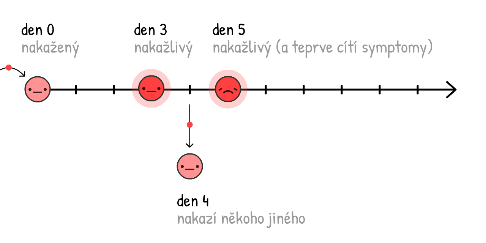
Pokud jsou případy podrobeny sebe-izolaci až v momentě, kdy lidé ví, že jsou nemocní (tedy když pociťují symptomy), virus se stále šíří:
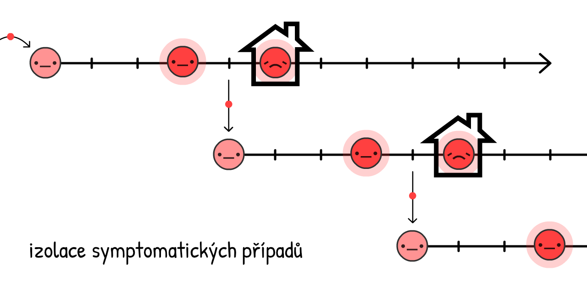
44 % všech přenosů se děje přesně takto: pre-symptomaticky! 23
Nicméně, pokud dohledáme a umístíme do karantény nedávné blízké kontakty symptomatických případů... můžeme zastavit šíření tím, že budeme o krok napřed!
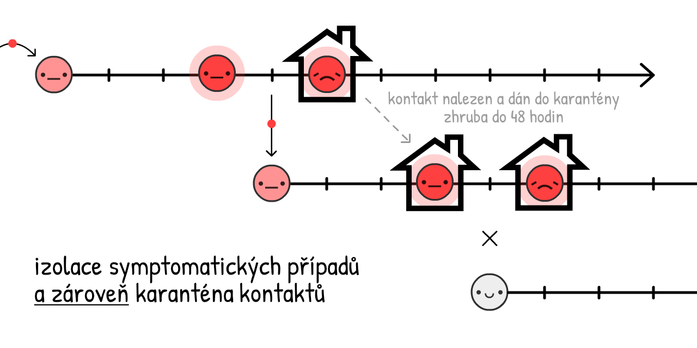
Tomuto se říká trasování kontaktů. Jedná se o starý nápad, kterého bylo využito v bezprecedentním měřítku pro zkrocení onemocnění Ebola24. Toto je základem plánu boje s COVID-19 na Taiwanu a v Jižní Koreji!
(Navíc nám to umožňuje využívat omezeného množství testů s větší efektivitou: na odhalování asymptomatických nositelů
Klasicky se kontakty dohledávají osobními rozhovory. Ale osobní rozhovory samy o sobě jsou příliš pomalé pro ~48 hodinové okno nemoci COVID-19. Proto vyhledávači kontaktů potřebují pomoc a podporu — NIKOLIV nahrazení — trasovacími aplikacemi.
(Tento nápad nepřichází od "ajťáků": využití aplikací v boji s nemocí COVID-19 byl zpočátku navržen týmem oxfordských epidemiologů.)
Počkat, aplikace, které trasují s kým se stýkám?... Znamená to, že Velký bratr má přístup k mému soukromí?
Rozhodně ne! DP-3T, tým epidemiologů & kryptografů (včetně jednoho z nás, Marcela Salathého) již teď vyvíjí aplikaci — s kódem přístupným veřejnosti — na trasování kontaktů, která neodhaluje žádné informace o vaší identitě, lokalitě, kontaktech, a dokonce ani toho, kolik kontaktů máte.
(Na přesně stejném principu funguje i česká eRouška - ta je také tvořena dobrovolníky a její kód je přístupný veřejnosti. - poznámka překladatele)
Funguje to takto:
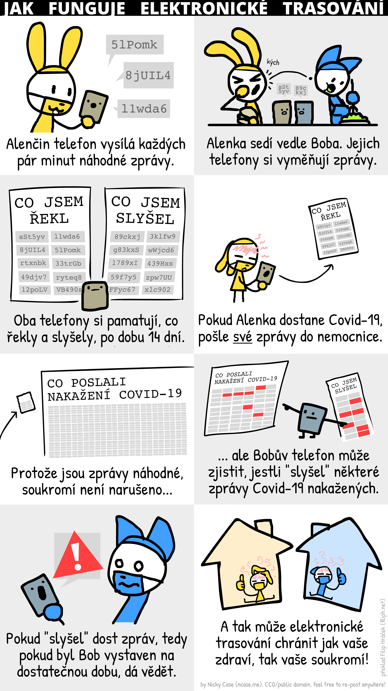
(Zde je celý komiks. Podrobné informace o "prankingu"/falešných pozitivech/apod. v poznámkách pod čarou:25)
DP-3T a podobné týmy, jako jsou TCN Protocol26 a MIT PACT27, inspirovaly firmy Apple & Google začlenit takovéto trasování kontaktů přímo do operačních systémů Android/iOS.28 (Nedůvěřujete Google/Apple? To je dobře! Krásné na tomto systému je to, že nevyžaduje důvěru!) V blízké době budou možná státní zdravotnické úřady vyžadovat stažení této aplikace. Pokud se jedná o model se zabezpečením a veřejně přístupným kódem, učiňte tak.
Ale co lidé bez chytrých telefonů? Nebo infekce dotykem klik? Nebo "skutečné" asymptomatické případy? Aplikace na kontrolu trasování nemohou zachytit veškeré přenosy... a to je v pořádku! Pro zajištění R < 1 nepotřebujeme zachytit veškeré přenosy, pouze něco přes 60 %.
(Celou řadu připomínek na téma zaměňování před-symptomatických a "skutečných" asymptomatických případů najdete v poznámkách pod čarou - "pravé" asymptomatické případy jsou vzácné:29)
Izolování symptomatických případů sníží R až o 40 % a karanténa před/asymptomatických kontaktů sníží R až o 50 %30:
To znamená, že i bez 100 % kontaktů v karanténě můžeme dosáhnout hodnoty R < 1 bez lockdownu! To je dobré pro naše psychické & finanční zdraví. (A zároveň je to dobré také pro jedince, kteří musí do izolace/karantény. Stát by je měl podpořit – zaplatit testy, chránit pracovní místa, placenou dovolenou apod. I tak je to levnější než přerušovaný lockdown.)
Poté držíme R < 1 do doby dostupnosti vakcíny, která mění ohrožené
(Pozn.: tento kalkulátor předstírá, že vakcína má 100% účinnost. Mějte na paměti, že v realitě je nutné kompenzovat očkováním více než nad rámec "stádní imunity", aby bylo stádní imunity skutečně dosaženo.)
Dost řečí. Zde je simulace:
- Několikaměsíčního lockdownu, dokud se nebudeme moci...
- Přeorientovat na "Testovat, Trasovat, Izolovat", dokud nebudeme moci...
- Naočkovat dostatek obyvatel, což znamená...
- Vítězství.
Takže to je ono! Tímto způsobem můžeme s tímto letadlem nouzově přistát.
Takto porazíme COVID-19.
...
Ale co když bude situace ještě horší? Situace už je teď děsivá. To je strach a to je dobře! Strach nám dodává energii pro vytvoření záložních plánů.
Pesimisté vynalézají padáky.
Scénář 4+: Masky pro všechny, léto, jističe
Co když je R0 mnohem vyšší, než se předpokládalo, a výše zmíněná opatření, dokonce i s určitými rozestupy, pořád nejsou dost na dosažení R < 1?
Pomněte: i když nemůžeme dosáhnout R < 1, snížení R stále snižuje "přestřelení" celkového počtu případů, a tím zachraňuje životy. Každopádně, R < 1 je ideální, takže níže jsou některé další způsoby, jak R snížit:
Masky pro všechny:
"Počkat," možná si říkáte, "Masky mě přece před onemocněním neochrání!"
Máte pravdu. Maska vás před onemocněním neochrání31... chrání ostatní před vaším onemocněním.
Ale počkat – jak může jednoduchý kus látky blokovat kapénky jedním směrem, ale ne druhým? Odpověď je ne-intuitivní a přitom jednoduchá:
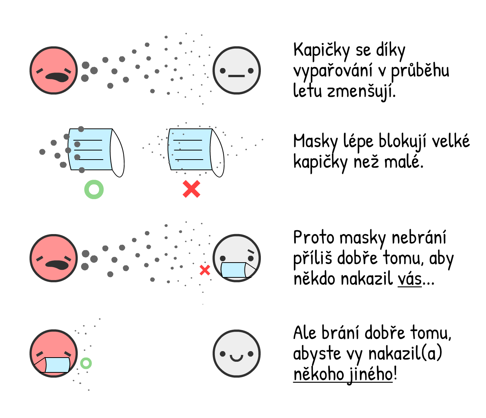
Chirurgické masky na infekční osobě snižují virus v kapénkách nachlazení & chřipky o 70 %32 – to by mohlo mít potencionálně stejně velký dopad jako lockdown!
Nicméně nevíme s jistotou, jaký dopad mají masky specificky na COVID-19. Ve vědeckém prostředí by měl člověk publikovat pouze zjištění u kterých je 95% jistota.(...měl.33) Masky, k 1. květnu 2020, mají méně než 95% jistotu.
Nicméně, pandemie je jako poker. Když vložíte sázku, jen když máte 95% jistotu, přijdete o všechno. Jak prokázal poslední článek na téma masek, který publikoval British Medical Journal,34 musíme zvážit cenu/výhodu i přes nejistotu. Asi takto:
Cena: Pokud se jedná o podomácku vyrobené roušky (s efektivitou zhruba na dvou třetinách chirurgických roušek35), je cena velmi nízká. Pokud se jedná o chirurgické masky, ty jsou dražší, ale stále relativně dostupné.
Výhoda: I v případě, že je šance 50–50, že užíváním chirurgických masek snížíme přenos o 0 % nebo o 70 %, průměrná "očekávaná hodnota" je stále 35 %, což je stejné jako poloviční lockdown! Tedy můžeme odhado-očekávat, že chirurgické masky sníží R až od 35 %, snížené o naši nejistotu. (Naše předpoklady můžete kdykoliv zpochybnit vlastním nastavením posuvníků.)
(další argumenty pro/proti maskám:36)
Samotné masky nedosáhnou R < 1. Pokud nás však mytí rukou & "Testovat, Trasovat, Izolovat" dostane pouze na R = 1.10, poté je 1/3 lidí užívajících masky tím posledním kouskem pro překonání R < 1. A virus je zkrocen!
Léto:
Dobře, v tomto případě se sice nejedná o "opatření," které můžeme kontrolovat, ale i tak může pomoci! Některá média sdělují, že léto s nemocí COVID-19 nijak nepomůže. Napůl mají pravdu: léto nás nedostane na R < 1, ale pomůže snížit R.
Pro COVID-19 platí, že každý jeden stupeň Celsia sníží R o 1.2 %.37 Teplotní rozdíl mezi létem a zimou v New Yorku je 26°C,38 takže léto pomůže snížit R o ~31 %.
Samotné léto nám nedodá R < 1, pokud však máme omezené zdroje, můžeme měřítko opatření v létě trochu snížit – a díky tomu je můžeme navýšit v zimě.
Lockdown "jistič":
A pokud toto všechno stále nebude dostatečné pro získání R < 1... můžeme udělat další lockdown.
Není však nutné vše zavírat na 2 měsíce, pak 1 měsíc otevřeno, pak zase zavřeno, a tak stále dokola! Protože je R sníženo, budeme potřebovat pouze jeden nebo dva lockdown "jističe" před dostupností vakcíny. V nedávné době tento krok podstoupil Singapur, "ačkoliv" zde byl COVID-19 již 4 měsíce pod kontrolou. Nejedná se o selhání: toto je cena za úspěch.
Zde je simulace scénáře "lockdownu na počkání":
- První lockdown, a poté...
- Přiměřené množství hygieny & "Testovat, Trasovat, Izolovat", s přiměřeným opatřením "Masky pro všechny", a poté...
- Ještě jeden lockdown "jistič" před nalezením vakcíny.
A pak jsou tady další opatření, která můžeme podniknout pro další snížení hodnoty R:
- Omezení cestování/karanténa
- Kontrola teploty v obchodních centrech a školách
- Hloubkové čištění veřejných prostor
- Nahrazení podání rukou něčím jiným
- A vše ostatní, co nám přinese lidský důvtip
. . .
Doufáme, že vám to aspoň trochu přináší naději.
I s těmito pesimistickými scénáři je možné COVID-19 zkrotit a přitom chránit naše psychické a finanční zdraví. Využitím lockdownu jakožto "resetujícího tlačítka", udržením R < 1 izolací případů + trasováním kontaktů s ochranou soukromí + přinejmenším látkovými maskami pro všechny... můžeme život tak nějak navrátit do normálu!
Jistě, možná budete mít vysušené ruce. Ale budete moci jít na rande nebo do obchodu s komiksy! Budete moci jít ven s přáteli na poslední Hollywoodský trhák. Budete moci pozorovat čtenáře v knihovně a mít radost z maličkostí každodenního života.
I v případě toho nejčernějšího scénáře... si život najde cestu.
Nyní se připravme na ty nejhorší z horších scénářů. Přistání na vodě. Oblečte si záchrannou vestu a následujte světelné značení směrem k únikovému východu:
Nakazíte se onemocněním COVID-19 a uzdravíte se. Nebo se necháte naočkovat vakcínou. Každopádně máte nyní imunitu...
...na jak dlouho?
- COVID-19 má nejbliže k onemocnění SARS, které svým přeživším dodalo 2 roky imunity.39
- Koronavirus, který způsobuje běžné nachlazení, vám dá 8 měsíců imunity.40
- Jsou dostupné zprávy o lidech, zotavených z nemoci COVID-19, jejichž testy byly poté opět pozitivní. Není však jasné, zda se nejednalo o falešné pozitivní.41
- Jedna nerecenzovaná studie na opicích prokázala imunitu na onemocnění COVID-19 trvající přinejmenším 28 dní.42
Jak je na tom COVID-19 u lidí, k 1. květnu 2020, co se týče délky imunity? To je obrovská neznámá.
Pro potřeby této simulace řekněme, že se jedná o 1 rok. Simulace níže začíná na 100 %
Návrat exponenciálního rozkladu!
Toto je SEIRS Model. Poslední "S" znamená
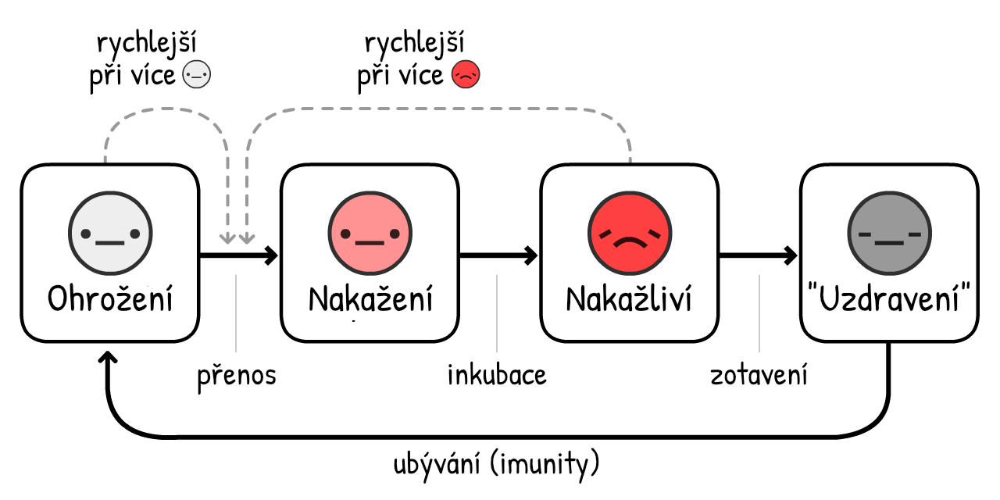
Pojďme vyzkoušet simulaci šíření onemocnění COVID-19, po dobu 10 let, bez jakýchkoliv opatření... pokud imunita trvá pouze rok:
V předešlých simulacích byl pouze jeden nárůst přetížení JIP. Nyní jich máme několik a navíc se
R = 1, tedy je endemické.
Naštěstí nám léto snižuje R, a to nám situaci jistě zlepší:
Aha.
Oproti tomu, co nám může říct selský rozum, léto nárůsty ještě zhoršuje a navíc je dělá pravidelnými! Důvodem je to, že léto snižuje nové případy
Naštěstí je řešení tohoto problému poměrně přímočaré - očkování lidí každý podzim/zimu, podobně jako je tomu u chřipky:
(Po odehrání nahrávky můžete vyzkoušet své vlastní vakcinační kampaně! Možnost pozastavení/spuštění simulace je vám stále k dispozici.)
Zde se nabízí mnohem děsivější otázka:
Co když nebude vakcína k dispozici několik let? Nebo nikdy?
Aby bylo jasno: toto je velmi nepravděpodobné. Většina epidemiologů očekává vakcínu během 1 až 2 let. Jasně, pro žádný koronavirus ještě nikdy nebyla vakcína vynalezena, důvodem je však rychlé vyhlazení onemocnění SARS — a běžné nachlazení nestojí za takovou investici.
I přesto výzkumníci infekčních onemocnění sdílejí obavy: Co když nedokážeme vytvořit dostatek dávek?43 Co když to uspěcháme a vakcína nebude bezpečná?44
I v případě hororového scénáře "bez vakcíny" existují 3 výstupní možnosti. Od nejvíce po nejméně drastickou:
1) Zavedení přerušovaných či částečných R < 1 opatření, a to pro dosažení "přirozené" stádní imunity. (Varování: následkem bude vysoký počet úmrtí & poškození plic. A zároveň plán nebude efektivní, pokud nebude imunita přetrvávající.)
2) Zavést R < 1 opatření navždy. Trasování kontaktů & nošení masek se zkrátka po příchodu onemocnění COVID-19 stane ve světě normou, tak jako se testování SPN a nošení kondomů stalo novou normou ve světě po příchodu onemocnění HIV.
3) Zavést R < 1 opatření do doby, než bude pro léčbu onemocnění COVID-19 o hodně, opravdu o hodně méně pravděpodobná nutnost intenzivní péče. (Na tom by se mělo pracovat tak jako tak!) Desetinásobné snížení využití JIP má stejný efekt jako desetinásobné zvýšení kapacity JIP.
Zde je simulace bez trvající imunity, bez vakcíny a dokonce i bez opatření – pouze s pomalým navyšováním přežití při dlouhotrvajících přírůstcích:
Dokonce i pod tímto nejhorším z nejhorších scénářů ... si život najde cestu.
. . .
Možná chcete zpochybnit naše předpoklady a vyzkoušet jiná R0 nebo další čísla. Nebo vyzkoušet simulace svých vlastních opatření!
Zde je (volitelný) Sandbox Mode, s veškerou dostupností. (posuňte se dolů pro zobrazení dalšího ovládání) Vytvářejte simulace a pohrejte si s modely, jak jen budete chtít:
Tento základní "letecký simulátor epidemie" nás toho hodně naučil. Pomohl nám zodpovědět otázky ohledně předešlých několika měsíců, několika následujících měsíců a několika následujících let.
Teď se můžeme konečně vrátit k...
Letadlo se potopilo. Pevně se držíme záchranné vesty. Je čas se vyškrábat na pevninu.45
Týmy epidemiologů a zákonodárců (levice, pravice, a kombinace obou) se shodli na tom, jak pokořit onemocnění COVID-19, a současně ochránit naše životy a zároveň naše svobody.
Zde je přibližná osnova s několika (více kontroverzními) záložními plány:
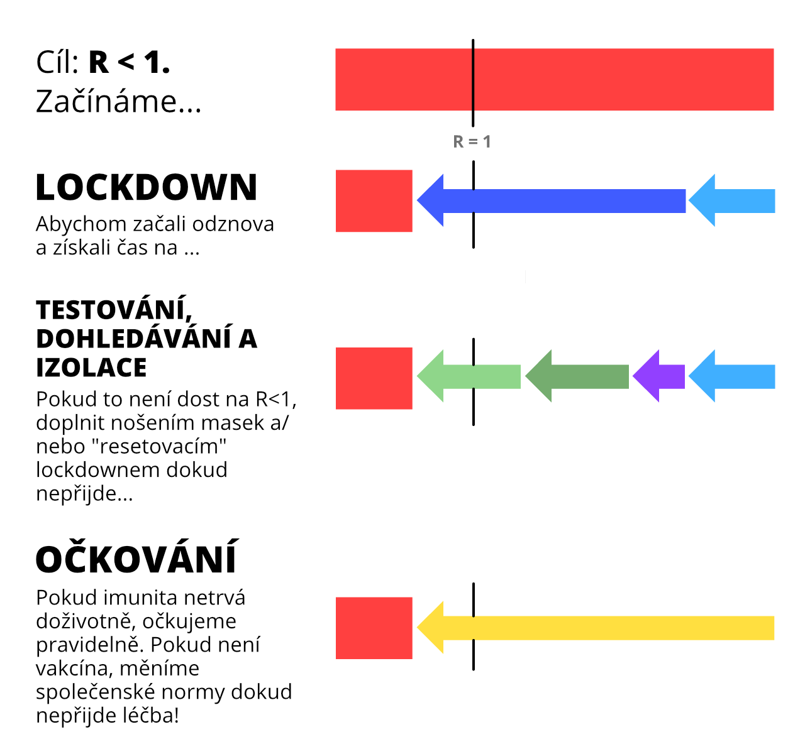
Co to všechno znamená pro VÁS?
Pro všechny: Respektujte lockdowny, ať se můžeme co nejrychleji dostat z Fáze 1. Dodržujte mytí rukou. Noste masky. Stáhněte si aplikaci pro trasování kontaktů s ochranou soukromí, jakmile budou příští měsíc dostupné. (V česku je eRouška dostupná již měsíce - poznámka překladatele.) Udržujte své fyzické a psychické zdraví! Kontaktujte své zastupitele, ať zvednou zadek a začnou něco dělat ...
Pro zákonodárce: Vytvářejte zákony, které podporují obyvatele, kteří musí do karantény/izolace. Vytvářejte místa na podporu manuálního trasování kontaktů s podporou aplikací pro trasování kontaktů, vybavených ochranou soukromí. Nasměrujte více zdrojů k aspektům, které musí být budovány, jako jsou ...
Pro výzkumníky: Vytvářejte testy. Vytvářejte ventilátory. Vytvářejte osobní ochranné pomůcky pro nemocnice. Vytvářejte testy. Vytvářejte masky. Vytvářejte aplikace. Vytvářejte antivirotika, profylaktika a další léčbu, mimo vakcín. Vytvářejte vakcíny. Vytvářejte testy. Vytvářejte testy. Vytvářejte testy. Vytvářejte naději.
Nebagatelizujte strach za účelem budování naděje. Náš strach by měl být jednotný s naší nadějí, podobně jako u vynálezu letadla & padáků. Příprava na děsivou budoucnost je způsob, jakým se vytváří nadějná budoucnost.
Jediné, čeho se musíme bát, je pocit, že bát se člověk má jen strachu samotného.
Tyto poznámky pod čarou budou obsahovat zdroje, odkazy nebo bonusové komentáře. Jako tento komentář!
Tento průvodce byl publikován 1. května 2020 Mnoho obsažených informací se stane v budoucnosti zastaralými, věříme však, že tento průvodce pokryje 95 % možných budoucností a že Epidemiologie 101 zůstane navždy užitečná.
(Aktualizováno 15. května: Přidány citace pro "1 z 20 of infikovaných osob jsou hospitalizovány" a "0.5 % infikovaných osob umírá")↩︎
“Hlavní [sériový] interval byl 3.96 dní (95% CI 3.53–4.39 dní)”. Du Z, Xu X, Wu Y, Wang L, Cowling BJ, Ancel Meyers L (Disclaimer: Články s předčasným vydáním nejsou považovány za jejich finální verze)↩︎
Pamatujte: veškeré simulace jsou výrazně zjednodušeny pro účely vzdělávání.
Jedno zjednodušení: Když této simulaci řeknete "Infikuj 1 novou osobu každých X dní", ve skutečnosti se zvyšuje # infikovaných na 1/X každý den. To samé platí pro budoucí nastavení této simulace – "Zotavení každých X dní" ve skutečnosti snižuje # infikovaných na 1/X každý den.
Tyto nejsou zcela totožné, ale je zde dostatečná podobnost a pro vzdělávací účely je toto nastavení méně matné, než nastavení hodnot pro přenos/zotavení přímo.↩︎
“Medián přenosného období [...] byl 9.5 dní.” Hu, Z., Song, C., Xu, C. et al Ano, víme, že "medián" není to samé jako "průměr". Ale pro vzdělávací potřeby je to dostatečně blízko.↩︎
Pro více technické vysvětlení SIR Modelu se podívejte na The Institute for Disease Modeling a Wikipedia↩︎
Pro více technické vysvětlení SIR Modelu se podívejte na The Institute for Disease Modeling a Wikipedia↩︎
“Pokud předpokládáme, že inkubační období hlavní distribuce je 5.2 dní, na základě prvnotních studií případů onemocnění COVID-19, můžeme usoudit, že infekční období začíná od 2.3 dní (95% CI, 0.8–3.0 dní) před nástupem symptomů” (překlad: Pokud předpokládáme počátek symptomů kolem 5. dne, infekčnost začíná o 2 dny dříve = Infekčnost začíná během 3 dnů) He, X., Lau, E.H.Y., Wu, P. et al.↩︎
“Medián R hodnoty pro sezónní chřipku byl 1.28 (IQR: 1.19–1.37)” Biggerstaff, M., Cauchemez, S., Reed, C. et al.↩︎
“Odhadujeme základní reprodukční číslo R0 pro 2019-nCoV na hodnotu kolem 2.2 (90 % vysoký interval hustoty: 1.4–3.8)” Riou J, Althaus CL.↩︎
“vypočítali jsme medián R0 hodnoty 5.7 (95% CI 3.8–8.9)” Sanche S, Lin YT, Xu C, Romero-Severson E, Hengartner N, Ke R.↩︎
To je za předpokladu, že člověk je stejně infekční během celého "infekčního období". Opět, zjednodušení pro vzdělávací účely.↩︎
Mějte na paměti R = R0 * poměr stále povolených přenosů. Pamatujte také na to, že poměr přenosů povoluje = 1 - poměr přenosů zastavených.
Tedy, pro dosažení hodnoty R < 1, je nutné získat R0 * TransmissionsAllowed < 1.
Tedy, TransmissionsAllowed < 1/R0
Tedy, 1 - TransmissionsStopped < 1/R0
Tedy, TransmissionsStopped > 1 - 1/R0
Tedy, potřebujete zasravit více než 1 - 1/R0 přenosů pro získání R < 1 a zastavení viru!↩︎
[AKTUALIZOVÁNO 15. KVĚTNA] Mnoho z Vás právem poukázalo na naši předešlou citaci "1 z 20 vyžaduje hospitalizaci", ta byla založena na starých datech USA zabývajících se potvrzenými případy – což bylo výrazně nižší oproti skutečným počtům případů z důvodu nedostatku testování.
Podívejme se tedy na zemi s nejvyšším počtem testů na počet obyvatel: Island. 15. května 2020, měl Island 118 hospitalizovaných na 1802 potvrzených případů ≈ 6.4 % hospitalizační hodnota nebo 1 z 16.
Více současná studie COVID-19 ve Francii – využívající nejen oficiální potvrzené případy, ale také data testů protilátek, zjistila, že “3.6 % infikovaných jedinců vyžaduje hospitalizaci”. Nebo, 1 z 28.
Celkově je zde spousta nejistot, ale "1 z 20" je poměrně blízká hodnota. Mimoto, pro zbytek těchto simulací byla kapacita nemocnic ztrojnásobena – takže, i když je "1 z 20" třikrát vyšší, pointa zůstává stejná.
Stará citace: ~~"Procento případů onemocnění COVID-19 ve Spojených státech amerických od 12. února do 16. března 2020, které vyžadovaly přijetí na jednotku intenzivní péče (JIP) dle věkové skupiny". Mezi 4.9 % a 11.5 % pro všechny COVID-19 případy vyžadující ICU. Nižší hranice je vybírána štědře, jedná se o 5 % nebo 1 z 20. Všimněte si, že se jedná o celek specifický pro věkovou strukturu USA a bude vyšší v zemích se starší populací a nižší v zemích s mladší populací.~~↩︎
“Počet JIP lůžek = 96,596”. Od the Society of Critical Care Medicine USA Populace byla 328,200,000 v roce 2019. 96,596 z 328,200,000 = přibližně 1 z 3400.↩︎
[AKTUALIZOVÁNO 15. KVĚTNA] Výzkumníci v Indianě, USA provedli náhodný test populace a zjistili poměr infekce-úmrtí (IFR) v hodnotě 0.58 %.↩︎
“Říká, že cíl je stejný jako v ostatních zemích: zploštění křivky ohromným nárůstem infekcí. Následkem může být zajištění národní stádní imunity; jedná se o vedlejší účinek, nikoliv záměr. [...] Skutečný vládní plán proti koronaviru, dostupný online, vůbec stádní imunitu nezmiňuje.”
“Všech osm významných studií sděluje, že mytí rukou snižuje riziko respirační infekce, snížení rizika se pohybuje mezi 6 % až 44 % [pooled value 24% (95% CI 6–40%)].” Souhrnná hodnota byla zaokrouhlena na 25 %, pro potřeby zjednodušení této simulace. Rabie, T. and Curtis, V. Poznámka: jak poukazuje tato meta-analýza, kvality studií mytí rukou (zejména v zemích s vysokými příjmy) jsou hrozné.↩︎
“Bylo zjištěno 75 % snížení denních kontaktů u pozorovaných subjektů. To by bylo dostačující pro snížení R0 z hodnoty 2.6 před lockdownem na 0.62 (0.37 - 0.89) během lockdownu”. To bylo zaokrouhleno na 70 % v těchto simulacích pro jejich zjednodušení. Jarvis and Zandvoort et al↩︎
Toto zkreslení zmizí v případě plánování R na logaritmické škále... ale to by bylo nutné vysvětlit logaritmickou škálu.↩︎
“S absencí jiných intervencí bude klíčovým měřítkem pro úspěch rozestupů fakt, zda budou kapacity kritické péče překonány. Aby bylo možné se tomu vyvarovat je nutné aplikovat prodloužený nebo částečný lockdown až do roku 2022.” Kissler and Tedijanto et al↩︎
Viz Figure 6 from Holt-Lunstad & Smith 2010. Samozřejmě velkou odpovědností je nález korelace. Pokud však nechcete náhodně vybírat jedince, kteří budou do konce života osamocení, pozorovací důkazy jsou to jediné, co zůstává.↩︎
Průměrně 3 dny do infekčnosti: “Pokud předpokládáme, že inkubační doba hlavní distribuce je 5.2 dní (na základě studií prvotních případů onemocnění COVID-19) odhadujeme, že infekčnost se projevuje po 2.3 dnech (95% CI, 0.8–3.0 days) před projevením symptomů” (překlad: Pokud předpokládáme počátek symptomů po dnech, infekčnost začíná o 2 dny dříve = Infekčnost začíná po 3 dnech) He, X., Lau, E.H.Y., Wu, P. et al.
Průměrně 4 dny na infikovaní někoho jiného: “Hlavní [serial] interval byl 3.96 dní (95% CI 3.53–4.39 dní)” Du Z, Xu X, Wu Y, Wang L, Cowling BJ, Ancel Meyers L
Průměrně 5 dní na pocítění symptomů: “Medián inkubačního období projevení symptomů byl odhadnut na 5.1 dní (95% CI, 4.5 to 5.8 days)” Lauer SA, Grantz KH, Bi Q, et al↩︎
“Odhadujeme, že 44 % (95 % interval spolehlivosti, 25–69 %) druhotných případů jsou lidé infikovaní během indexových případů v jejich asymptomatické fázi." He, X., Lau, E.H.Y., Wu, P. et al↩︎
“Trasování kontaktů bylo kritickým opatřením v Libérii a představovalo trasování kontaktů v největším rozsahu v hisotrii" Swanson KC, Altare C, Wesseh CS, et al.↩︎
Aby bylo možné zamezit "prankingu" (falešná tvrzení jedinců o infekčním stavu), vyžaduje DP-3T Protocol jednorázové heslo od nemocnice, což vám umožní nahrát zprávu.
Falešná pozitiva jsou problémem pro manuální & digitální trasování kontaktů. I přesto je možné snížit počet falešných pozitivních případů během 2 dnů: 1) Upozorněním Boba pouze v případě zaznamenání, dejme tomu, 30+ důležitých zpráv, nikoliv zprávy z doslechu. A 2) Pokud si aplikace myslí, že byl Bob viru vystaven, může jej nasměrovat na manuálního trasovač kontaktů, pro následující podrobný rozhovor.
Pro další problematiku, jako jsou datová šířka pásma, integrita zdroje a další bezpečnostní aspekty se obraťte na the open-source DP-3T whitepapers!↩︎
Temporary Contact Numbers, a decentralized, privacy-first contact tracing protocol↩︎
Apple and Google partner on COVID-19 contact tracing technology. Je dobré vědět, že nevyvíjí aplikace samotní, pouze vytvářejí systémy, které podpoří tyto aplikace.↩︎
Celá řada zpráv – a dokonce několik výzkumných prací – nepoukazuje na rozdíly mezi "případy, které nevykazují symptomy v době testování" (před-symptomatické) a "případy bez jakýchkoliv symptomů" (pravé asymptomatické). Jediný způsob jak odhalit rozdíl je následné pozorování případů.
Což provedla tato studie. (Disclaimer: "Články s dřívějším vydáním nejsou považovány za finální.") V call centru v Jižní Koreji, kde se vyskytlo šíření nákazy nemoci COVID-19, "pouhá 4 (1.9 %) zůstala asymptomatická během 14-denní karantény, nikdo z rodinných příslušníků nebyl vystaven sekundární infekci."
To znamená, že "pravé asymptomatické" jsou vzácné a chytnout onemocnění od skutečně asymptomatického jedince je ještě vzácnější!↩︎
Ze stejné Oxford studie, která zpočátku doporičila aplikace pro boj s nemocí COVID-19: Luca Ferretti & Chris Wymant et al Viz. obr. 2. Předpokládá-li se, že R0 = 2.0, bylo zjištěno, že:
- Symptomatičtí přispívají R = 0.8 (40 %)
- Před-symptomatičtí přispívají R = 0.9 (45 %)
- Asymptomatičtí přispívají R = 0.1 (5 %, ačkoliv tento model má nejistoty a hodnota může být výrazně nižší)
- Aspekty z našeho prostředí, např. kliky, přispívají R = 0.2 (10 %)
A k tomu přidejte před- & a-symptomatické kontakty (45 % + 5 %) a dostanete se na 50 % pro R!↩︎
“Žádná z těchto chirurgických masek není vybavena adekvátním filtrem a padnutím na obličej, které by odpovídaly požadavků pro respirační ochranu.” Tara Oberg & Lisa M. Brosseau↩︎
“Celková hodnota 3.4 snížení [70% reduction] aerosolu kopíruje čísla pozorovaná v kombinaci s téměř kompletní eliminace šíření velkých kapének, jak předvel Johnson, který naopak udává, že nošení chirurgických masek infikovanou osobou by mohlo mít klinicky vyšší dopad na přenos.” Milton DK, Fabian MP, Cowling BJ, Grantham ML, McDevitt JJ↩︎
Jakýkoliv vědec, který si přečetl naši poslední větu asi teď pláče smíchy. Viz.: p-hacking, the replication crisis)↩︎
“Je načase aplikovat princip předběžné opatrnosti” Trisha Greenhalgh et al [PDF]↩︎
Davies, A., Thompson, K., Giri, K., Kafatos, G., Walker, J., & Bennett, A Viz. tabulka 1: 100% bavlněné triko disponuje zhruba 2/3 účinností filtrace chirurgické masky, to bylo testováno pro dva typy bakteriálních aerosolů.↩︎
"Je nutné ít zásoby pro nemocnice." Naprostý souhlas. Ale to je spíše argument podporující zvýšení výroby masek, ne jejich přerozdělování. Mezitím mohou být vyrobeny látkové masky.
"Je složité nosit je správným způsobem." A taky je složité si umývat ruce podle podkladů WHO - opravdu?, "Krok 3) pravou dlaní přes levý hřbet"?! – přitom je mytí rukou stále doporučováno, i provedené nesprávně je stále lepší než nic.
"Lidé budou kvůli nošení méně pozorní během umývání rukou & dodržování rozestupů." Jasně, a bezpečnostní pás nutí člověka ignorovat stopku a čištění zubní nití nutí člověka jíst kameny. Ale teď vážně, náš argument je opačný: masky jsou konstantním fyzickým připomenutím pro vlastní opatrnost – ve Východní Asii jsou masky navíc symbolem solidarity!↩︎
“Zvýšení teploty o jeden stupeň Celsia [...] snižuje[s] R o 0.0225” a “Průměrná R-hodnota těchto 100 měst je 1.83”. 0.0225 ÷ 1.83 = ~1.2 %. Wang, Jingyuan and Tang, Ke and Feng, Kai and Lv, Weifeng↩︎
V roce 2019 v Central Parku, měl nejteplejší měsíc (Červenec) 79.6°F, nejchladnější měsíc (Leden) byl 32.5°F. Rozdíl je 47.1°F, nebo ~26°C. PDF from Weather.gov↩︎
“Pro SARS-specifické protilátky byly zachovány průměrně 2 roky[...] To znamená, že SARS pacienti mohou být opět náchylní k infekci ≥3 roky po prvotnímu vystavení nákaze.” Wu LP, Wang NC, Chang YH, et al. "Bohužel" se nikdy nedovíme jak dlouho imunita pro SARS opravdu trvala, nemoc byla rychle vymícena.↩︎
“Byly odhaleny výrazné rozdíly mezi pravděpodobností přinejmenším jedné nákazy a pravděpodobností opětovné nákazy pro beta-koronaviry HKU1 a OC43 34 týdnů po zápisu/první infekci." Marta Galanti & Jeffrey Shaman (PDF)↩︎
“Jakmile člověk vir porazí, virové částice často v těle ještě nějakou dobu přetrvávají. Tyto nemohou spustit infekci, mohou se však projevit jako pozitivní během testování.” from STAT News by Andrew Joseph↩︎
Od Bao et al. Disclaimer: Tento článek byl předtištěn a nepodléhá certifikaci v rámci peer review (prozatím). Dále zdůrazňujeme, že: opakované infekce byly testovány pouze po 28 dnech.↩︎
“Pokud se vakcína na koronavirus dostaví, bude svět schopen jí vyprodukovat dostatek?” by Roxanne Khamsi, on Nature↩︎
“Nesmí se uspěchat nasazení vakcín a léčiv proti onemocnění COVID-19 bez dostatečné garance bezpečnosti” by Shibo Jiang, on Nature↩︎
Metafora pevniny from Marc Lipsitch & Yonatan Grad, on STAT News↩︎
 PUBLIC DOMAIN
To znamená, že už teď máte svolení použít a pozměnit
cokoliv z grafiky/kódu/slov na této strance – na blogu, zpravodajském webu, ve třídě, kdekoliv!
PUBLIC DOMAIN
To znamená, že už teď máte svolení použít a pozměnit
cokoliv z grafiky/kódu/slov na této strance – na blogu, zpravodajském webu, ve třídě, kdekoliv!